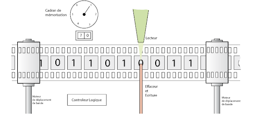

En 1936, Alan Turing écrivit un article qui résout le problème de la décision de l'Allemand David Hilbert : « On Computable Numbers, with an Application to the Entscheidungsproblem » où il développe la machine de Turing, qui résout des problèmes mathématiques de façon mécanique, c'est-à-dire la base de l'informatique.
 Arrive la Seconde Guerre Mondiale ; Turing s'engage dans l'armée britannique en tant que cryptologue et intègre les services secrets de Bletchley Park. Il travaille sur le déchiffrement des messages de la marine allemande et améliore la « bombe » créée par les polonais, grâce à deux failles, et déchiffre le code des machines Enigma utilisées par le commandement nazi, en seulement 20 minutes.
Ces deux failles sont, premièrement, le fait que les lettres ne pouvaient être codées par la même lettre et, deuxièmement, qu'il a trouvé la manière pour trouver le câblage en façade de l'Enigma par un message quotidien émis par l'Allemagne sous couverture de rapport météo. Cela fit gagner le guerre aux Alliés, deux ans plus tôt que si cette « bombe » n'avait pas était mise en oeuvre, économisant plus de 14 millions de vie d'après certains calculs.
Après la guerre, Alan Turing conçoit un prototype de calculateur électronique, l'ACE (Automatic Computing Engine) et rejoint ensuite l'Université de Manchester qui, en 1948, dirigé par Max Newman, avait construit le premier ordinateur programmable opérationnel, le mark 1. Alan Turing conçoit les premières musiques crées sur un ordinateur en 1951.
Alan Turing se passionne pour l'Intelligence Artificielle et élabore le Test de Turing, apparu dans son article publié en octobre 1950 : « Computing Machinery and Intelligence ». Ce test consiste à faire dialoguer une machine avec un humain et de demander à un autre humain lequel des deux est la machine. Il s'intéresse aussi à la croissance animale et végétale amenant son article sur les « Structures de Turing », « The Chemical Basis of Morphogenesis ».